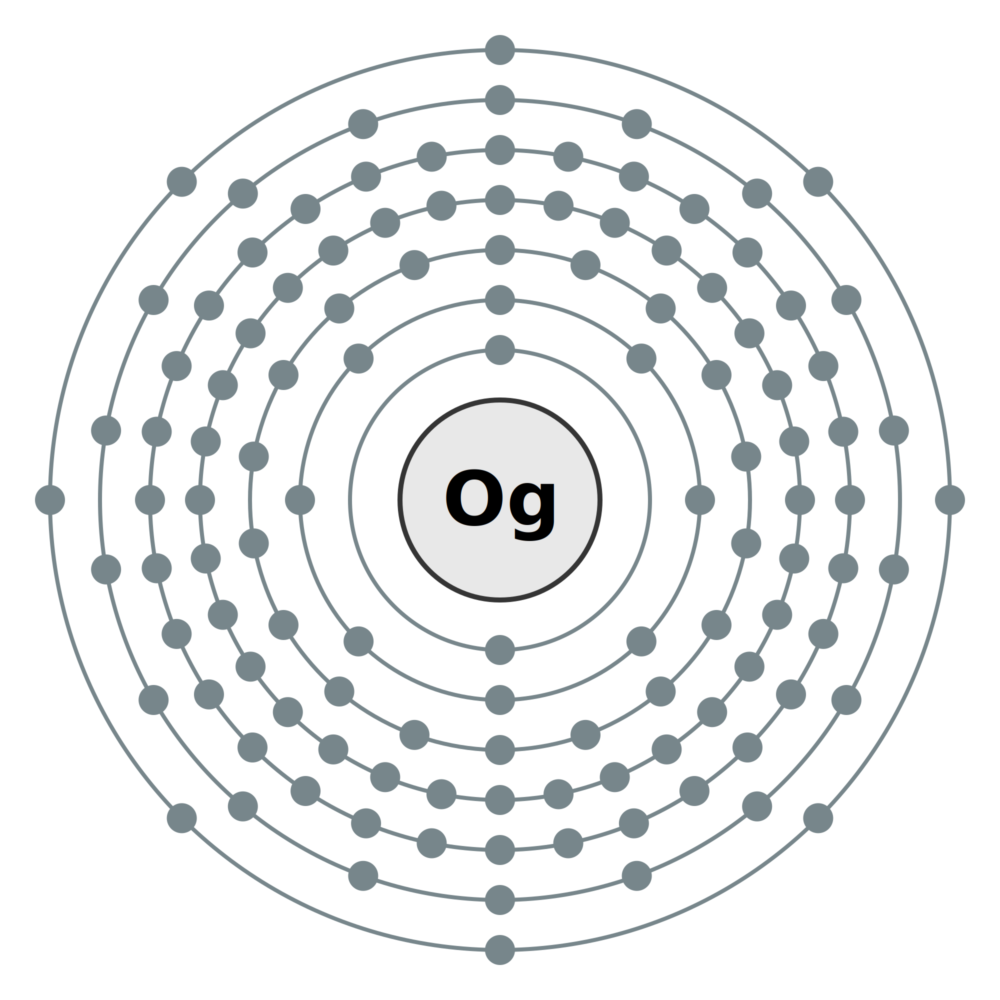

Oganessônio
Seu nome temporário era “Ununóctio” , do latim "Ununoctium", um indicado pela IUPAC para o elemento, antes de ser oficialmente batizado.
Assim como os outros três novos elementos, tudo o que se sabe é inferido nas propriedades periódicas esperadas para o elemento. Isso se dá pois é extremamente radioativo e de vida muito curta. Por exemplo, embora o oganessônio seja um membro do grupo 18, pode possivelmente não se comportar como um gás nobre, ao contrário de todos os outros elementos deste grupo.
As equipes colaboradoras dos descobridores do Instituto Conjunto para Pesquisa Nuclear, Dubna (Rússia) e Lawrence Livermore National Laboratory - Laboratório Nacional Lawrence Livermore (EUA) propuseram esse nome em Homenagem e reconhecimento do professor Yuri Oganessian por suas contribuições pioneiras à pesquisa de elementos transactinídeos. Suas realizações incluem a descoberta de elementos superpesados e avanços significativos na física nuclear de núcleos superpesados, incluindo evidências experimentais para a “ilha da estabilidade”.
Você sabia?? O oganessônio tem o maior número atômico e maior massa atômica de todos os elementos conhecidos.